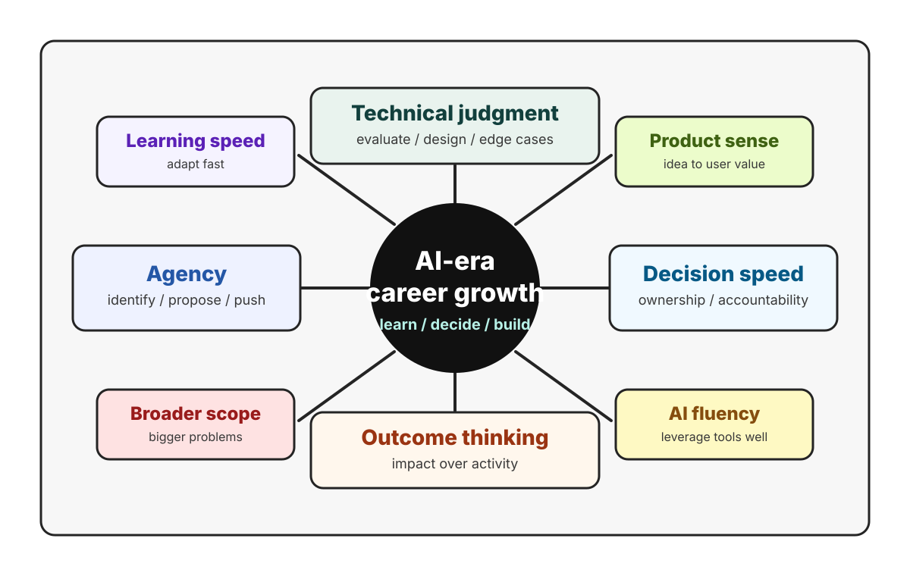

AI careers / work / 2026
Navigating career growth in the age of AI
AI is changing how companies operate, how teams are structured, and what it means to build a durable career in tech.

Are you feeling uneasy about how fast AI is changing everything?
You are not alone. As AI capabilities accelerate, they are not just improving tools. They are reshaping how companies operate, how teams are structured, and what it means to build a career in tech. Roles that once felt clearly defined are blurring. Career ladders that seemed predictable are becoming far less linear.
So what is really happening, and how should you respond?
AI is not flattening organizations overnight
There is a common narrative that AI will make companies completely flat and eliminate layers of management. Reality is more nuanced.
What is happening is a sharp increase in expectations around efficiency and output per person. Teams are being asked to do more with fewer people, and organizations are rethinking:
- How many layers they actually need.
- How large a manager's scope can be.
- Whether teams should be structured around functions or outcomes.
In some companies, managers who once supported 8 to 10 people may now oversee 15 to 20 or more. Teams are increasingly assembled around projects rather than rigid departments, and individuals are expected to contribute to broader end-to-end results, not just isolated tasks.
But extreme flattening is not guaranteed to last. Many organizations will likely overcorrect, then stabilize as new coordination challenges emerge. The constant is this: low-leverage work is being squeezed out, and high-impact contributors are becoming disproportionately valuable.
The manager role is being rewritten
Traditional management, where the job is mostly assigning tasks, tracking progress, and overseeing execution, is becoming less relevant as AI boosts individual productivity.
Managers are evolving into a hybrid of strategist, coach, and operator:
- Scope definers: deciding which problems are worth solving and aligning work with company priorities.
- Obstacle removers: clearing blockers and navigating increasingly blurry team boundaries.
- Talent multipliers: coaching rather than micromanaging, especially as their span grows.
- Opportunity creators: making sure team members get visibility, trust, and room to grow.
Management is not going away. But it is becoming more demanding. The value of a manager now lies less in control and more in judgment, leverage, and enabling others.
ICs are moving from specialists to problem solvers
AI is also reshaping what it means to be a strong individual contributor.
In the past, excellence often meant mastering a specific skill: coding, design, analysis, modeling, or operations. Now that AI lowers the cost of execution, that is no longer enough.
The most valuable ICs are becoming:
- End-to-end builders: able to take a problem from idea to delivery.
- Cross-functional thinkers: comfortable spanning product, design, engineering, and business context.
- Outcome-oriented operators: focused on impact, not just output.
It is no longer just about writing code. It is about understanding what to build, why it matters, and how to validate it quickly.
This shift widens the gap between talent tiers. People who combine domain knowledge, technical judgment, and AI fluency gain massive leverage. People who rely purely on execution risk being replaced or sidelined.
The rise of the product engineer
One role gaining prominence is the product engineer: someone who blends engineering, product thinking, and user awareness.
As AI reduces the cost of building, the distance between idea and implementation shrinks. That creates an advantage for people who can:
- Turn ideas into prototypes quickly.
- Validate concepts with real users.
- Iterate without heavy coordination overhead.
This does not make product managers or designers obsolete. Instead, it pushes everyone toward a more integrated skill set. Boundaries between roles are softening, and collaboration is becoming more fluid, but also more demanding.
Career paths are becoming less defined
The classic question of IC or manager, specialist or generalist, is getting harder to answer.
Both IC and management tracks still exist, but expectations are rising on both sides:
- Managers need broader ownership, stronger strategic thinking, and better talent development skills.
- ICs need to operate across domains and deliver complete solutions.
Generalists may have an edge, but only if they are truly capable, not just "a bit of everything." The winning profile is someone who can navigate complexity and solve meaningful problems across boundaries.
The real question is no longer only which path to choose. It is:
- Am I becoming more effective with AI?
- Am I expanding the scope of problems I can solve?
- Am I creating visible, meaningful impact?
The new skill stack
In this environment, a few capabilities stand out:
- Technical judgment still matters. AI can generate solutions, but expertise is still needed to evaluate them, design systems, and handle edge cases.
- Agency is a force multiplier. Less structure means fewer instructions. You need to identify problems, propose solutions, and push work forward.
- Learning speed is critical. Tools, workflows, and expectations are evolving constantly. Fast learning is a major competitive advantage.
- Outcome thinking beats output. AI makes it easy to produce more. What matters is whether the work actually solves problems and creates value.
Performance metrics have not caught up yet
One interesting challenge is that companies are still figuring out how to evaluate performance in an AI-driven world.
Should people be measured by output volume, use of AI tools, efficiency gains, or business impact?
There is no clear standard yet. But one thing is clear: simply using AI more does not equal delivering more value. The real signal is whether AI helps you achieve better outcomes, faster and more effectively.
What about junior talent?
AI introduces a tricky problem: if entry-level tasks are automated, how do juniors gain experience?
The answer likely involves rethinking training entirely. Future junior hires will need:
- Strong learning agility.
- Curiosity and initiative.
- Basic technical grounding.
- An ownership mindset.
- The ability to work with AI, not compete against it.
Organizations also need to create environments where juniors can engage with real problems earlier, using AI as an accelerator rather than a replacement.
Decision-making is the new bottleneck
As execution speeds up, decision-making becomes the limiting factor.
If a team can build a prototype in a day but needs weeks to align, the problem is not engineering. It is process.
This makes clear ownership more important than ever:
- Who is responsible for decisions?
- Who drives execution?
- When do we align, and when do we move forward?
Faster environments require sharper accountability, not more consensus.
How to adapt: practical career moves
Instead of waiting for your company to redefine roles, it is smarter to adapt proactively:
- Integrate AI deeply into your workflow. Use it for research, coding, planning, debugging, and decision support.
- Expand your scope. Do not limit yourself to your job description. Look for bigger problems to solve.
- Develop idea-generation skills. Execution alone is no longer enough; you need to identify opportunities.
- Build cross-functional fluency. Engineers should understand users, PMs should understand systems, and designers should understand constraints.
- Focus on outcomes. Measure success by impact, not activity.
Distinctive resource
CRACKML INTERVIEW
If your career direction points toward AI engineering, ML systems, or research engineering, I found CrackML Interview to be a very helpful resource. It is especially useful for practicing the technical judgment that AI-era roles increasingly reward: transformers, distributed training, inference systems, debugging, numerical stability, and performance reasoning.
I would treat it less like a question bank to memorize and more like a structured way to sharpen how you think through modern ML problems.
Final thought: AI amplifies differences
AI is not a rising tide that lifts everyone equally. It amplifies strengths and exposes weaknesses.
People who combine domain expertise, technical insight, initiative, and fast learning will see their impact grow dramatically. People who depend on rigid processes or narrow execution may struggle to keep up.
The most useful questions to ask yourself now are simple:
- Am I using AI to expand what I can do?
- Am I taking on bigger, more meaningful problems?
- Can I move from idea to outcome faster than before?
- Am I actively shaping my role, or waiting for it to be defined?
AI is transforming how we work. But the fundamentals of long-term career growth have not changed as much as it seems: learn fast, think clearly, take ownership, and build things that matter.